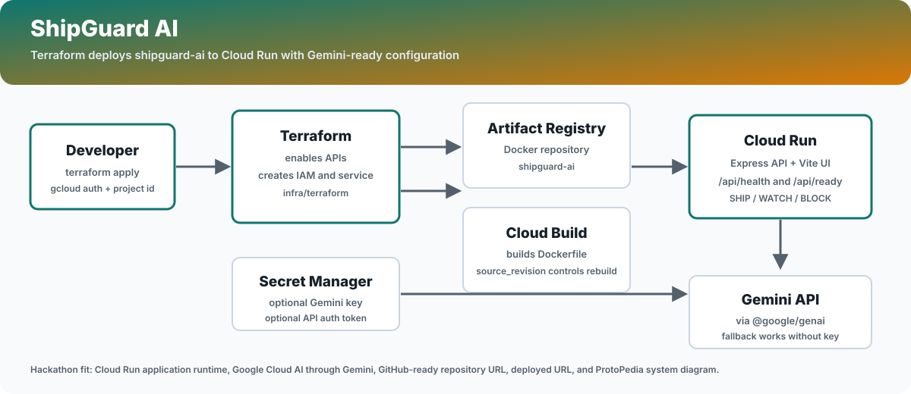

Terraformで作るもの
Cloud Run
Vite UI と Express API を1つのサービスで公開します。
Vite UI と Express API を1つのサービスで公開します。
Cloud Build
このプロジェクトの Dockerfile をビルドして Artifact Registry へpushします。
このプロジェクトの Dockerfile をビルドして Artifact Registry へpushします。
Gemini ready
Secret Manager 経由で Gemini API key を接続できます。
Secret Manager 経由で Gemini API key を接続できます。
構成図

最短デプロイ
cd outputs/01-shipguard-ai/infra/terraform
terraform init
terraform apply \
-var project_id="$GOOGLE_CLOUD_PROJECT" \
-var source_revision="$(date +%Y%m%d%H%M%S)"Cloud Build、Artifact Registry、Cloud RunをTerraformからまとめて作成します。
検証
SERVICE_URL="$(terraform output -raw service_url)"
curl -fsS "$SERVICE_URL/api/health"
curl -fsS "$SERVICE_URL/api/ready"
curl -fsS "$SERVICE_URL/api/version"画面を開き、SHIP / WATCH / BLOCK の判断が表示されることを確認します。
提出に使う項目
| 提出項目 | 値 |
|---|---|
| デプロイした作品のURL | terraform output -raw service_url |
| システム構成 | docs/architecture.svg とこのHTML |
| 開発素材 | Cloud Run, Gemini API, Cloud Build, Artifact Registry, Secret Manager, Terraform |